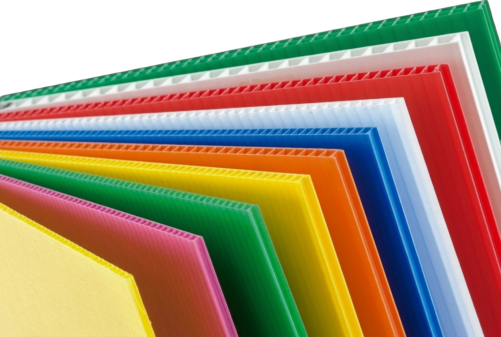
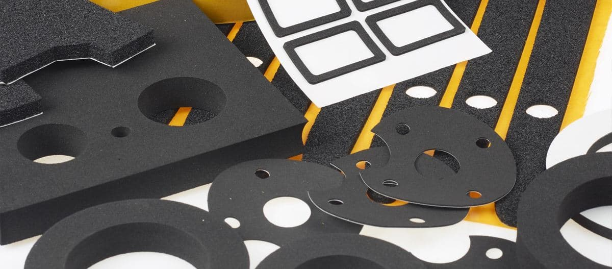
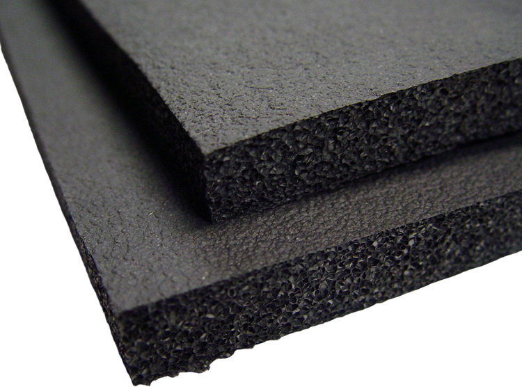
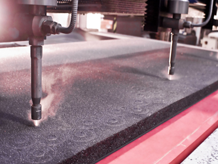
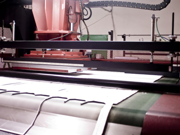

<title>UNIDEMP</title>
<link rel="preconnect" href="https://fonts.googleapis.com">
<link rel="preconnect" href="https://fonts.gstatic.com" crossorigin>
<link href="https://fonts.googleapis.com/css2?family=Unbounded:wght@300;500;700;900&family=Golos+Text:wght@400;500;600&family=JetBrains+Mono:wght@400;600&display=swap" rel="stylesheet">
<style>
/* Layout concept: «Сечение». Сайт показывает материал так, как его видит технолог —
   в работе. Герой — фото листа; карточки — матовый
   поликарбонат поверх фото; всё остальное — тихая инженерная сетка. */
:root{
  --bg:#eef3f6;            /* холодный полимер */
  --bg-2:#e2eaf0;
  --surface:#ffffff;
  --frost:rgba(255,255,255,.62);
  --fg:#0d1b26;
  --muted:#566a78;
  --line:#cfdbe3;
  --ink:#0f3a5f;           /* фирменный синий */
  --ice:#9fd3ef;           /* поликарбонат */
  --signal:#ff5a1f;        /* фирменный оранжевый, только для сигналов */
  --signal-ink:#3a1200;
  --skin:#0f3a5f;
  --fill:#cfe6f3;
  --display:"Unbounded","Golos Text",system-ui,sans-serif;
  --body:"Golos Text","Segoe UI",system-ui,sans-serif;
  --mono:"JetBrains Mono",ui-monospace,Consolas,monospace;
  color-scheme:light;
}
@media (prefers-color-scheme:dark){
  :root:not([data-theme="light"]){
    --bg:#081520; --bg-2:#0c1d2b; --surface:#0f2232; --frost:rgba(15,34,50,.62);
    --fg:#e6eff5; --muted:#8aa3b4; --line:#1c3346; --ink:#7cc4ee; --ice:#5fb6e6;
    --signal:#ff7240; --signal-ink:#2a0c00; --skin:#8fd0f4; --fill:#173a54;
    color-scheme:dark;
  }
}
:root[data-theme="dark"]{
  --bg:#081520; --bg-2:#0c1d2b; --surface:#0f2232; --frost:rgba(15,34,50,.62);
  --fg:#e6eff5; --muted:#8aa3b4; --line:#1c3346; --ink:#7cc4ee; --ice:#5fb6e6;
  --signal:#ff7240; --signal-ink:#2a0c00; --skin:#8fd0f4; --fill:#173a54;
  color-scheme:dark;
}

*{box-sizing:border-box}
[hidden]{display:none!important}
html{scroll-behavior:smooth}
body{margin:0; background:var(--bg); color:var(--fg); font-family:var(--body); font-size:16px; line-height:1.55; padding-inline:clamp(16px,3vw,40px)}
img{max-width:100%; display:block}
a{color:inherit}
h1,h2,h3{font-family:var(--display); margin:0; text-wrap:balance; letter-spacing:-.02em}
p{margin:0}
.mono{font-family:var(--mono); font-variant-numeric:tabular-nums}
.label{font-family:var(--mono); font-size:.72rem; letter-spacing:.14em; text-transform:uppercase; color:var(--muted)}
.shell{max-width:1240px; margin-inline:auto}
:focus-visible{outline:2px solid var(--signal); outline-offset:3px}

/* ——— шапка ——— */
.top{position:sticky; top:env(safe-area-inset-top,0px); z-index:50; margin-inline:calc(-1*clamp(16px,3vw,40px)); padding-inline:clamp(16px,3vw,40px);
  background:color-mix(in srgb,var(--bg) 78%,transparent); backdrop-filter:blur(14px) saturate(1.3); border-bottom:1px solid var(--line)}
.top .shell{display:flex; align-items:center; gap:28px; padding-block:14px}
.logo{font-family:var(--display); font-weight:700; font-size:1.3rem; text-decoration:none; letter-spacing:-.03em}
.logo span{color:var(--signal)}
.top nav{display:flex; gap:24px; margin-left:auto}
.top nav a{text-decoration:none; font-size:.92rem; color:var(--muted)}
.top nav a:hover{color:var(--fg)}
.call{font-family:var(--mono); font-weight:600; font-size:.88rem; text-decoration:none; padding:.55em .95em; background:var(--ink); color:var(--bg); border-radius:999px; white-space:nowrap}

/* ——— герой ——— */
html{overflow-x:clip}
.hero{position:relative; isolation:isolate; display:flex; flex-direction:column; justify-content:center; min-height:calc(100svh - 64px); padding-block:clamp(36px,6vw,80px)}
.hero > div:first-child{max-width:620px; position:relative}
.hero h1{font-size:clamp(2.3rem,5.6vw,4.6rem); line-height:.98; font-weight:900}
.hero h1 .thin{font-weight:300; display:block}
.hero h1 .hl{color:var(--ink)}
.hero .lede{margin-top:22px; font-size:1.12rem; color:var(--muted); max-width:44ch}
.hero .ctas{display:flex; gap:12px; flex-wrap:wrap; margin-top:30px}
.btn{font:600 .95rem var(--body); text-decoration:none; padding:.95em 1.4em; border-radius:999px; border:1.5px solid var(--fg); background:transparent; color:var(--fg); cursor:pointer}
.btn:hover{background:var(--bg-2)}
.btn.go{background:var(--signal); border-color:var(--signal); color:var(--signal-ink)}
.btn.go:hover{filter:brightness(1.06); background:var(--signal)}
.hero .facts{display:flex; gap:28px; margin-top:38px; flex-wrap:wrap}
.hero .facts div{display:flex; flex-direction:column; gap:2px}
.hero .facts b{font-family:var(--display); font-size:1.5rem; font-weight:700}
.hero .facts span{font-size:.82rem; color:var(--muted)}

/* фото в герое */
.hero-bg{position:absolute; z-index:-1; top:-64px; bottom:0; left:calc(50% - 50vw); right:calc(50% - 50vw); overflow:hidden; pointer-events:none}
.hero-bg img{position:absolute; inset:0; width:100%; height:100%; max-width:none; object-fit:cover; object-position:62% 40%; transform:scale(1.05)}
.hero-bg::after{content:""; position:absolute; inset:0; background:linear-gradient(0deg,var(--bg) 0%,transparent 16%),linear-gradient(90deg,var(--bg) 0%,color-mix(in srgb,var(--bg) 90%,transparent) 30%,color-mix(in srgb,var(--bg) 25%,transparent) 58%,transparent 78%)}
.hero-tag{position:absolute; right:clamp(8px,4vw,60px); bottom:clamp(20px,4vw,48px); font-size:.86rem; font-weight:500; background:var(--surface); border-radius:999px; padding:.45em .9em; box-shadow:0 10px 30px -18px color-mix(in srgb,var(--fg) 50%,transparent)}
.hero-tag .code{font:600 .74rem var(--mono); color:var(--signal); margin-right:.4em}

/* ——— ленты-разделы ——— */
section{padding-block:clamp(48px,7vw,96px)}
.head{display:flex; justify-content:space-between; align-items:end; gap:24px; flex-wrap:wrap; margin-bottom:34px}
.head h2{font-size:clamp(1.7rem,3.6vw,2.8rem); font-weight:700; max-width:16ch; line-height:1.05}
.head p{max-width:40ch; color:var(--muted)}

/* каталог — фото под матовым поликарбонатом */
.rack{display:grid; grid-template-columns:repeat(12,1fr); gap:14px}
.sheet{position:relative; display:flex; flex-direction:column}
.sheet .ph{overflow:hidden; background:radial-gradient(closest-side, color-mix(in srgb,var(--ink) 16%,transparent), transparent)}
.sheet.scene .ph{border-radius:18px}
.sheet img{filter:drop-shadow(0 18px 22px color-mix(in srgb,var(--fg) 22%,transparent)); width:100%; aspect-ratio:4/3; object-fit:contain; padding:6px; transition:transform .7s cubic-bezier(.2,.7,.2,1)}
.sheet.tall img{aspect-ratio:16/10}
.sheet.scene img{object-fit:cover; padding:0}
.sheet:hover img{transform:scale(1.04)}
.sheet .glass{position:relative; padding:12px 2px 0; flex:1}
.sheet .code{font:600 .74rem var(--mono); color:var(--signal); letter-spacing:.08em}
.sheet h3{font-size:1.05rem; font-weight:500; margin-top:4px}
.sheet p{font-size:.84rem; color:var(--muted); margin-top:4px}
.sheet .open{font:600 .78rem var(--mono); margin-top:8px; color:var(--ink); background:none; border:0; padding:0; cursor:pointer}
.w7{grid-column:span 7} .w5{grid-column:span 5} .w4{grid-column:span 4} .w6{grid-column:span 6}


/* каталог */
.filters{display:flex; gap:8px; flex-wrap:wrap; margin-bottom:28px}
.filters button{font:500 .92rem var(--body); color:var(--fg); background:transparent; border:1.5px solid var(--line); border-radius:999px; padding:.6em 1.1em; cursor:pointer}
.filters button:hover{border-color:var(--fg)}
.filters button[aria-pressed="true"]{background:var(--fg); color:var(--bg); border-color:var(--fg)}
.filters .n{font:600 .76rem var(--mono); opacity:.6; margin-left:.3em}
.grid{display:grid; grid-template-columns:repeat(auto-fill,minmax(220px,1fr)); gap:36px 22px}
.item{display:flex; flex-direction:column; min-width:0}
.item .ph{aspect-ratio:4/3; display:grid; place-items:center; background:radial-gradient(closest-side, color-mix(in srgb,var(--ink) 14%,transparent), transparent)}
.item img{max-width:92%; max-height:92%; width:auto; height:auto; object-fit:contain; filter:drop-shadow(0 16px 18px rgba(0,0,0,.22)); transition:transform .5s cubic-bezier(.2,.7,.2,1)}
.item:hover img{transform:translateY(-6px) scale(1.03)}
.item .code{font:600 .74rem var(--mono); color:var(--signal); letter-spacing:.06em; margin-top:12px}
.item h3{font-size:1rem; font-weight:500; margin-top:4px; letter-spacing:-.01em}
.item p{font-size:.86rem; color:var(--muted); margin-top:4px}
.banner{position:relative; display:flex; align-items:flex-end; min-height:320px; margin-top:48px; border-radius:22px; overflow:hidden; text-decoration:none; color:inherit; isolation:isolate}
.banner img{position:absolute; inset:0; width:100%; height:100%; object-fit:cover; z-index:-1; transition:transform .8s cubic-bezier(.2,.7,.2,1)}
.banner:hover img{transform:scale(1.04)}
.banner .glass{margin:16px; max-width:520px; background:var(--frost); backdrop-filter:blur(16px) saturate(1.4); border-radius:14px; padding:18px 20px}
.banner .code{font:600 .74rem var(--mono); color:var(--signal); letter-spacing:.08em}
.banner h3{font-size:1.25rem; font-weight:700; margin-top:4px}
.banner p{color:var(--muted); font-size:.92rem; margin-top:6px}

.item{text-decoration:none; color:inherit}
.item:hover h3{color:var(--ink)}
.item:focus-visible{outline-offset:6px; border-radius:8px}
/* страница товара */
.pp-crumbs{display:flex; gap:.6em; flex-wrap:wrap; padding-top:28px; font:500 .84rem var(--mono); color:var(--muted)}
.pp-crumbs a{color:var(--muted); text-decoration:none}
.pp-crumbs a:hover{color:var(--fg)}
.pp-crumbs [aria-current]{color:var(--fg)}
.pp-top{display:grid; grid-template-columns:1.1fr .9fr; gap:clamp(24px,4vw,64px); align-items:center; padding-block:20px 56px}
.pp-photo{aspect-ratio:4/3; display:grid; place-items:center; background:radial-gradient(closest-side, color-mix(in srgb,var(--ink) 18%,transparent), transparent)}
.pp-photo img{max-width:100%; max-height:100%; width:auto; height:auto; filter:drop-shadow(0 30px 34px rgba(0,0,0,.25))}
.pp-code{font:600 .8rem var(--mono); color:var(--signal); letter-spacing:.06em}
.pp-top h1{font-size:clamp(2rem,4.4vw,3.4rem); font-weight:900; line-height:1.02; margin-top:10px}
.pp-lead{color:var(--muted); font-size:1.1rem; margin-top:16px; max-width:46ch}
.pp-keys{display:grid; grid-template-columns:1fr 1fr; gap:1px; background:var(--line); border:1px solid var(--line); border-radius:14px; overflow:hidden; margin:24px 0 0}
.pp-keys div{background:var(--surface); padding:12px 14px; min-width:0}
.pp-keys dt{font-size:.76rem; color:var(--muted)}
.pp-keys dd{margin:3px 0 0; font:600 .92rem var(--mono); overflow-wrap:anywhere}
.pp-body{display:grid; grid-template-columns:1.35fr .9fr; gap:clamp(24px,4vw,64px); align-items:start; padding-block:40px 64px; border-top:1px solid var(--line)}
.pp-h{font-size:1.4rem; font-weight:700; margin-bottom:16px}
.pp-text{min-width:0}
.pp-text p{margin-top:14px; max-width:68ch}
.pp-text p:first-child{margin-top:0}
.pp-text ul{list-style:none; margin:16px 0 4px; padding:0; display:grid; grid-template-columns:repeat(auto-fill,minmax(200px,1fr)); gap:8px}
.pp-text li{padding:10px 12px; background:var(--surface); border:1px solid var(--line); border-radius:10px; font-size:.92rem}
.pp-text li::first-letter{text-transform:uppercase}
.pp-spec{position:sticky; top:calc(env(safe-area-inset-top,0px) + 84px); background:var(--surface); border:1px solid var(--line); border-radius:18px; padding:22px; min-width:0}
.pp-spec h2{font-size:1.15rem; font-weight:700}
.pp-spec table{width:100%; border-collapse:collapse; margin-top:12px; font-size:.9rem}
.pp-spec td{padding:10px 0; border-top:1px solid var(--line); vertical-align:top}
.pp-spec td:first-child{color:var(--muted); padding-right:12px}
.pp-spec td:last-child{text-align:right; font-family:var(--mono); font-variant-numeric:tabular-nums}
.pp-empty{color:var(--muted); font-size:.88rem; margin-top:10px}
.pp-related{padding-top:8px; border-top:1px solid var(--line)}
.pp-nav{display:grid; grid-template-columns:1fr 1fr; gap:14px; margin-top:48px}
.pp-nav a{display:flex; flex-direction:column; gap:4px; text-decoration:none; padding:18px 20px; border:1px solid var(--line); border-radius:14px; background:var(--surface)}
.pp-nav a:hover{border-color:var(--fg)}
.pp-nav a:last-child{text-align:right}
.pp-nav span{font:500 .8rem var(--mono); color:var(--muted)}
.pp-nav b{font-weight:600}
@media (max-width:960px){
  .pp-top,.pp-body{grid-template-columns:1fr}
  .pp-spec{position:static}
}
@media (max-width:520px){ .pp-keys{grid-template-columns:1fr} .pp-nav{grid-template-columns:1fr} .pp-nav a:last-child{text-align:left} }

/* подбор */
.pick{display:grid; grid-template-columns:.85fr 1.15fr; gap:22px; align-items:stretch}
.tasks{display:flex; flex-direction:column; gap:8px}
.task{display:flex; justify-content:space-between; align-items:center; gap:12px; text-align:left; font:500 1rem var(--body); color:var(--fg); background:var(--surface); border:1px solid var(--line); border-radius:14px; padding:16px 18px; cursor:pointer}
.task:hover{border-color:var(--ink)}
.task[aria-pressed="true"]{background:var(--ink); color:var(--bg); border-color:var(--ink)}
.task .arrow{font-family:var(--mono)}
.answer{position:relative; display:flex; flex-direction:column}
.answer .ph{overflow:hidden; background:radial-gradient(closest-side, color-mix(in srgb,var(--ink) 16%,transparent), transparent)}
.answer .ph.scene{border-radius:20px}
.answer img{width:100%; aspect-ratio:16/9; object-fit:contain; padding:0}
.answer .ph.scene img{object-fit:cover; padding:0}
.answer .glass{padding:18px 2px 0; flex:1}
.answer h3{font-size:1.35rem; font-weight:700}
.answer p{color:var(--muted); margin-top:8px; max-width:52ch}
.answer .chips{display:flex; gap:6px; flex-wrap:wrap; margin-top:12px}
.answer .chips span{font:600 .74rem var(--mono); background:var(--bg); border:1px solid var(--line); padding:.35em .7em; border-radius:999px}
.answer .btn{margin-top:14px}

/* производство */
.plant{display:grid; grid-template-columns:1.3fr 1fr; gap:14px}
.plant .big{position:relative; border-radius:20px; overflow:hidden; min-height:420px; background:var(--bg-2)}
.plant .big img{position:absolute; inset:0; width:100%; height:100%; object-fit:cover}
.plant .side{display:grid; grid-template-rows:1fr 1fr; gap:14px}
.plant .side figure{margin:0; position:relative; border-radius:20px; overflow:hidden; min-height:200px; background:var(--bg-2)}
.plant .side img{position:absolute; inset:0; width:100%; height:100%; object-fit:cover}
.plant figcaption{position:absolute; left:12px; bottom:12px; font:600 .74rem var(--mono); background:var(--frost); backdrop-filter:blur(12px); padding:.4em .75em; border-radius:999px}
.manifesto{margin-top:34px; display:grid; grid-template-columns:1fr 1fr; gap:36px}
.manifesto .big-q{font-family:var(--display); font-size:clamp(1.3rem,2.4vw,1.9rem); font-weight:300; line-height:1.25}
.manifesto .big-q b{font-weight:700; color:var(--ink)}
.manifesto p{color:var(--muted)}

/* процесс — реальная последовательность */
.flow{display:grid; grid-template-columns:repeat(4,1fr); gap:0; border-top:2px solid var(--fg)}
.step{padding:20px 20px 0 0; position:relative}
.step::before{content:""; position:absolute; top:-7px; left:0; width:12px; height:12px; border-radius:50%; background:var(--bg); border:2px solid var(--fg)}
.step.on::before{background:var(--signal); border-color:var(--signal)}
.step .n{font:600 .78rem var(--mono); color:var(--muted); margin-top:8px}
.step h3{font-size:1.05rem; font-weight:500; margin-top:6px}
.step p{font-size:.88rem; color:var(--muted); margin-top:6px; max-width:28ch}

/* заявка */
.order{display:grid; grid-template-columns:1fr 1fr; gap:14px}
.card{background:var(--surface); border:1px solid var(--line); border-radius:20px; padding:clamp(20px,3vw,32px); min-width:0}
.card h3{font-size:1.25rem; font-weight:700}
.phone-big{font-family:var(--display); font-weight:700; font-size:clamp(1.6rem,3.6vw,2.6rem); letter-spacing:-.02em; margin-top:10px}
.kv{display:grid; gap:14px; margin-top:22px}
.kv div{display:flex; justify-content:space-between; gap:16px; padding-top:12px; border-top:1px solid var(--line); flex-wrap:wrap}
.kv dt{color:var(--muted); font-size:.88rem}
.kv dd{margin:0; font-family:var(--mono); font-size:.92rem; text-align:right}
.copy{font:600 .75rem var(--mono); background:none; border:1px solid var(--line); color:var(--muted); border-radius:999px; padding:.35em .8em; cursor:pointer}
.copy:hover{color:var(--fg); border-color:var(--fg)}
form.req{display:grid; gap:12px; margin-top:16px}
form.req label{display:grid; gap:6px; font-size:.84rem; color:var(--muted)}
form.req input, form.req textarea, form.req select{font:500 1rem var(--body); color:var(--fg); background:var(--bg); border:1px solid var(--line); border-radius:12px; padding:.75em .9em; width:100%}
form.req textarea{min-height:110px; font-family:var(--mono); font-size:.86rem; resize:vertical}
.row2{display:grid; grid-template-columns:1fr 1fr; gap:12px}
.status{font:600 .8rem var(--mono); color:var(--ink); min-height:1.2em}

footer{padding-block:32px 48px; border-top:1px solid var(--line); display:flex; justify-content:space-between; gap:16px; flex-wrap:wrap; color:var(--muted); font-size:.84rem}

@media (max-width:960px){
  .pick,.plant,.manifesto,.order{grid-template-columns:1fr}
  .hero{justify-content:flex-start; padding-bottom:42svh}
  .hero-bg img{object-position:70% 100%}
  .hero-bg::after{background:linear-gradient(0deg,var(--bg) 0%,transparent 12%),linear-gradient(180deg,var(--bg) 0%,color-mix(in srgb,var(--bg) 88%,transparent) 48%,transparent 70%)}
  .hero-tag{right:12px; bottom:16px}
  .w7,.w5,.w4,.w6{grid-column:span 12}
  .flow{grid-template-columns:1fr 1fr; row-gap:28px}
  .top nav{display:none}
  .top .call{margin-left:auto}
}
@media (max-width:520px){
  .flow{grid-template-columns:1fr}
  .row2{grid-template-columns:1fr}
  .hero .facts{gap:20px}
}
@media (prefers-reduced-motion:no-preference){
  .hero h1,.hero .lede,.hero .ctas{animation:up .7s cubic-bezier(.2,.7,.2,1) both}
  .hero-bg{animation:fade 1.2s ease both}
  .hero .lede{animation-delay:.06s} .hero .ctas{animation-delay:.12s}
}
@keyframes fade{from{opacity:.001} to{opacity:1}}
@keyframes up{from{transform:translateY(14px); opacity:.001} to{transform:none; opacity:1}}
</style>

<header class="top">
  <div class="shell">
    <a class="logo" href="#top">uni<span>demp</span></a>
    <nav>
      <a href="#katalog">Каталог</a>
      <a href="#podbor">Подбор</a>
      <a href="#proizvodstvo">Производство</a>
      <a href="#zayavka">Контакты</a>
    </nav>
    <a class="call" href="tel:+78129001511">+7 812 900-15-11</a>
  </div>
</header>

<main class="shell" id="top">

  <!-- ГЕРОЙ -->
  <section class="hero" style="padding-top:clamp(36px,6vw,80px)">
    <div>
      <p class="label">Санкт-Петербург · пластик · пена · упаковка</p>
      <h1 style="margin-top:18px"><span class="thin">Пластик, пена</span> и упаковка <span class="hl">под ваш чертёж</span></h1>
      <p class="lede">Листовой полипропилен и поликарбонат, вспененные материалы и тара. Изготавливаем ложементы и детали по вашему чертежу, доставляем по всей России.</p>
      <div class="ctas">
        <a class="btn go" href="#zayavka">Рассчитать заказ</a>
        <a class="btn" href="#podbor">Подобрать материал</a>
      </div>
      <div class="facts">
        <div><b class="mono">0,3–100</b><span>мм — толщина листов в каталоге</span></div>
        <div><b class="mono">24</b><span>вида материалов и изделий</span></div>
        <div><b class="mono">РФ</b><span>доставка по всей России</span></div>
      </div>
    </div>

    <div class="hero-bg" aria-hidden="true"></div>
    <div class="hero-tag"><span class="code">СПП</span> Сотовый полипропилен · любые цвета</div>
  </section>

  <!-- КАТАЛОГ -->
  <section id="katalog">
    <div class="head">
      <h2>Весь ассортимент</h2>
      <p>Листовые пластики, вспененные материалы и готовая упаковка.</p>
    </div>
    <div class="filters" role="group" aria-label="Раздел каталога">
      <button type="button" data-f="all" aria-pressed="true">Всё <span class="n"></span></button>
      <button type="button" data-f="sheet" aria-pressed="false">Листовые пластики <span class="n"></span></button>
      <button type="button" data-f="foam" aria-pressed="false">Вспененные материалы <span class="n"></span></button>
      <button type="button" data-f="pack" aria-pressed="false">Упаковка и тара <span class="n"></span></button>
    </div>
    <div class="grid" id="cat"></div>
    <a class="banner" href="#zayavka">
      
      <div class="glass"><div class="code">РАСКРОЙ</div><h3>Не нашли нужное? Сделаем по вашему чертежу</h3><p>Изготавливаем ложементы и детали из пеноматериалов по эскизу, размерам или самому изделию.</p></div>
    </a>
  </section>

  <!-- ПОДБОР -->
  <section id="podbor">
    <div class="head">
      <h2>Что вы делаете?</h2>
      <p>Выберите задачу — подскажем материал. Ошиблись — менеджер поправит.</p>
    </div>
    <div class="pick">
      <div class="tasks" role="group" aria-label="Задача">
        <button class="task" type="button" data-k="pack" aria-pressed="true">Защищаю изделия при перевозке<span class="arrow">→</span></button>
        <button class="task" type="button" data-k="green" aria-pressed="false">Строю теплицу или навес<span class="arrow">→</span></button>
        <button class="task" type="button" data-k="glass" aria-pressed="false">Нужна прозрачная защита<span class="arrow">→</span></button>
        <button class="task" type="button" data-k="tare" aria-pressed="false">Делаю разделители и тару<span class="arrow">→</span></button>
        <button class="task" type="button" data-k="tank" aria-pressed="false">Делаю ёмкости и резервуары<span class="arrow">→</span></button>
      </div>
      <div class="answer">
        <div class="ph" id="a-ph"></div>
        <div class="glass">
          <div class="label" id="a-code">Рекомендуем · ППЭ</div>
          <h3 id="a-title" style="margin-top:6px">Ложементы из вспененного полиэтилена</h3>
          <p id="a-text">Фрезеруем гнёзда точно по форме изделия — оно не болтается и не царапается.</p>
          <div class="chips" id="a-chips"><span>10–50 мм</span><span>фрезеровка</span><span>многооборот</span></div>
          <div style="display:flex; gap:10px; flex-wrap:wrap"><button class="btn go" type="button" id="a-go">Рассчитать этот материал</button><button class="btn" type="button" id="a-more">Подробнее о материале</button></div>
        </div>
      </div>
    </div>
  </section>

  <!-- ПРОИЗВОДСТВО -->
  <section id="proizvodstvo">
    <div class="head">
      <h2>Производство в Петербурге</h2>
      <p>Санкт-Петербург, Химический пер., 1. Изготавливаем ложементы по вашему чертежу.</p>
    </div>
    <div class="plant">
      <div class="big"></div>
      <div class="side">
        <figure><figcaption>Фрезеровка</figcaption></figure>
        <figure><figcaption>Обработка листа</figcaption></figure>
      </div>
    </div>
    <div class="manifesto">
      <p class="big-q">Берём на себя <b>упаковочную и логистическую задачу</b> целиком — от листа до готовой тары.</p>
      <p>UNIDEMP — производитель и поставщик пластиковых контейнеров, тары, листового пластика, пеноматериалов и упаковочной продукции. Подходим к задаче комплексно и предлагаем решения, проверенные практикой: от разовой поставки листа до снабжения производственной линии.</p>
    </div>
  </section>

  <!-- ПРОЦЕСС -->
  <section>
    <div class="head"><h2>Как мы делаем ложементы</h2><p>Так проходит заказ на индивидуальную упаковку.</p></div>
    <div class="flow">
      <div class="step on"><div class="n">шаг 1</div><h3>Чертёж</h3><p>Проектируем по эскизу, размерам или самому изделию. Технолог утверждает.</p></div>
      <div class="step"><div class="n">шаг 2</div><h3>Образец</h3><p>Делаем тестовый образец. Вы проверяете и вносите пожелания.</p></div>
      <div class="step"><div class="n">шаг 3</div><h3>Партия</h3><p>После вашего согласия изготавливаем всю партию.</p></div>
      <div class="step"><div class="n">шаг 4</div><h3>Склад и доставка</h3><p>Храним на нашем складе, доставляем по всей России.</p></div>
    </div>
  </section>

  <!-- ЗАЯВКА -->
  <section id="zayavka">
    <div class="head"><h2>Заказ и контакты</h2><p>Пн–Пт, 9:30–18:00.</p></div>
    <div class="order">
      <div class="card">
        <p class="label">Позвонить</p>
        <div class="phone-big mono">+7 (812) 900-15-11</div>
        <dl class="kv">
          <div><dt>Телефон</dt><dd>+7 (812) 900-15-11 <button class="copy" data-copy="+7 (812) 900-15-11">копировать</button></dd></div>
          <div><dt>Почта</dt><dd>info@unidemp.ru <button class="copy" data-copy="info@unidemp.ru">копировать</button></dd></div>
          <div><dt>Адрес</dt><dd>198095, Санкт-Петербург,<br>Химический пер., 1, лит. П, пом. 1-Н</dd></div>
          <div><dt>Часы</dt><dd>Пн–Пт · 9:30–18:00</dd></div>
        </dl>
      </div>
      <div class="card">
        <h3>Соберите заявку</h3>
        <p style="color:var(--muted); margin-top:6px; font-size:.92rem">Выберите материал и толщину — текст заявки соберётся сам. Скопируйте его и отправьте на почту или в мессенджер.</p>
        <form class="req" id="req">
          <div class="row2">
            <label for="f-mat">Материал<select id="f-mat"></select></label>
            <label for="f-t">Толщина<input id="f-t" type="text" placeholder="например, 4 мм"></label>
          </div>
          <label for="f-qty">Количество<input id="f-qty" type="text" value="50 листов"></label>
          <label for="f-text">Текст заявки<textarea id="f-text"></textarea></label>
          <button class="btn go" type="submit">Скопировать заявку</button>
          <div class="status" id="f-status" aria-live="polite"></div>
        </form>
      </div>
    </div>
  </section>
</main>

<main class="shell" id="page" hidden>
  <nav class="pp-crumbs" aria-label="Навигация">
    <a href="#katalog">Каталог</a><span>/</span><a id="pp-group" href="#katalog">Раздел</a><span>/</span><span id="pp-crumb-name" aria-current="page"></span>
  </nav>
  <section class="pp-top">
    <div class="pp-photo"></div>
    <div>
      <div class="pp-code" id="pp-code"></div>
      <h1 id="pp-name"></h1>
      <p class="pp-lead" id="pp-lead"></p>
      <dl class="pp-keys" id="pp-keys"></dl>
      <div class="ctas" style="display:flex; gap:12px; flex-wrap:wrap; margin-top:24px">
        <a class="btn go" id="pp-order" href="#zayavka">Рассчитать заказ</a>
        <a class="btn" href="tel:+78129001511">+7 (812) 900-15-11</a>
      </div>
    </div>
  </section>
  <section class="pp-body">
    <div>
      <h2 class="pp-h">Описание</h2>
      <div class="pp-text" id="pp-text"></div>
    </div>
    <aside class="pp-spec">
      <h2>Характеристики</h2>
      <table id="pp-spec-table"><tbody id="pp-table"></tbody></table>
      <p id="pp-spec-empty" class="pp-empty">Характеристики зависят от заказа — менеджер подберёт и пришлёт расчёт.</p>
      <p class="pp-empty" style="margin-top:12px">Нужен раскрой или изделие по чертежу — тоже сделаем.</p>
    </aside>
  </section>
  <section class="pp-related">
    <div class="head"><h2>Ещё в этом разделе</h2></div>
    <div class="grid" id="pp-more"></div>
    <nav class="pp-nav" aria-label="Соседние товары">
      <a id="pp-prev" href="#"><span>← Предыдущий</span><b></b></a>
      <a id="pp-next" href="#"><span>Следующий →</span><b></b></a>
    </nav>
  </section>
</main>

<footer class="shell">
  <span>© <span id="yr"></span> UNIDEMP · пластик · пена · упаковка</span>
  <span class="mono">198095 · Санкт-Петербург</span>
</footer>

<script type="application/json" id="details">{"spp":{"blocks":[{"t":"p","v":"Сотовый полипропилен (другое название «гофропластик») – современный многофункциональный материал, который представляет собой лист пластика с ячеистой структурой."},{"t":"p","v":"Отличительными особенностями данного вида пластика являются:"},{"t":"ul","v":["легкий вес","простота монтажа и ухода","влагостойкость","устойчивость к агрессивным средам","стойкость к истиранию","низкая стоимость (по сравнению с монолитными полипропиленами)"]},{"t":"p","v":"Листовой сотовый полипропилен, как строительный материал, применяется преимущественно внутри помещений. Влагостойкость и устойчивость к воздействию химических сред делают возможным его использование во влажных помещениях при отделке стен, перегородок и мобильных ограждений в автомойках, душевых и предбанниках."},{"t":"p","v":"Широкое применение материал нашел в изготовлении рекламных продуктов – щитов, указателей, информационных стендов, POS-материалов и конструкций, где важен баланс между весовыми, прочностными характеристиками и стоимостью материала. Поверхность пластика обрабатывается электрическим зарядом. Это позволяет наносить на полипропилен УФ печать и создавать красочные изображения."},{"t":"p","v":"В промышленности сотовый полипропилен листовой используют для изготовления тары и упаковки, которая обеспечивает целостность груза и снижает затраты на транспортировку и хранение. Антисептические свойства поверхности, отсутствие едкого запаха, его экологичность делают возможным применять этот материал в пищевой промышленности."},{"t":"p","v":"При покупке стоит учитывать технические характеристики. Правильно подобранный тип пластика влияет на конечный результат и при правильном обращении может служить долгие годы."},{"t":"p","v":"Технические характеристики:"},{"t":"table","v":[["Температурный диапазон использования","от -20 до +90 °С"],["Размеры листа","от 2 до 6 м"],["Толщина листа","от 2 до 40 мм (часто используется от 3 до 5 мм)"],["Вес (зависит от толщины листа)","от 0,41 до 0,90"],["Плотность","от 300 до 1700"],["Цвет","по шкале RAL"]]}]},"mpp":{"blocks":[{"t":"p","v":"Монолитный полипропилен (по-другому называют полипропилен листовой или литой) держит лидирующие позиции на рынке среди других пластиков, благодаря отличительным свойствам:"},{"t":"ul","v":["водонепроницаемость","стойкость к воздействию химической среды","устойчивость к влиянию внешней среды","высокий предел прочности","сопротивляется деформациям, но при этом достаточно гибкий","обладает антисептическими свойствами (на поверхности не размножаются бактерии)","имеет диэлектрические свойства"]},{"t":"p","v":"Производят листовой полипропилен методом экструзии гранул полипропилена. Исходное сырье засыпают в экструдер для плавления. Затем масса поступает в формующую головку, где материал приобретает форму листа заданной толщины. Далее горячее полотно проходит через каландры, охлаждается и калибруется. После этого вытягивается, на этом этапе удаляются все вредные вещества. Далее лист обрезают до заданных размеров и отправляют остывать. Процесс трудоемкий и требует использования дорогостоящего оборудования."},{"t":"p","v":"Монолитный полипропилен используют в пищевой, химической, радиотехнической, печатной промышленности. Без него не обходится гальваническое производство, машиностроение, медицина. Из листового пластика изготавливают воздуховоды, емкости для хранения жидкости, резервуары, бассейны, септики, очистные сооружения. Для обработки используется сварка, которая надежно скрепляет детали между собой и позволяет создавать сложные конструкции."},{"t":"p","v":"Купить листовой полипропилен можно натурального оттенка или цветной в соответствии с классификацией RAL. Обычно монолитный полипропилен представлен в сером цвете, этот цвет является базовым."},{"t":"p","v":"Монолитный полипропилен имеет следующие технические характеристики:"},{"t":"table","v":[["Температурный диапазон использования","от -40 до +80 °С"],["Размеры листа","от 0,5 до 8 м"],["Толщина листа","от 1 до 100 мм"],["Плотность","от 0,92"],["Цвет","по шкале RAL"]]}]},"spk":{"blocks":[{"t":"p","v":"Лист сотового поликарбоната состоит из двух поверхностей, которые соединены между собой ребрами жесткости. Пустотелый материал, отличается легкостью и прочностью одновременно. Сочетает в себе свойства, благодаря которым материал занимает топовые позиции среди других полиэфиров."},{"t":"p","v":"Сотовый поликарбонат обладает такими свойствами как:"},{"t":"ul","v":["легкость","долговечность","высокие термостойкость и огнестойкость","высокие теплоизоляционные свойства","высокая ударная прочность","высокая устойчивость к агрессивным средам","высокая светопроницаемость","устойчивость к природным воздействиям","неизменность форм","защита от УФ-излучения"]},{"t":"p","v":"Применяют сотовый поликарбонат, чаще всего, для светопроницаемых конструкций – теплицы, парники, ширмы, навесы, легкая прозрачная кровля, ограждение беседок и террас. Используют как элементы фасадов и делают вставки в мебель."},{"t":"p","v":"Простота обработки и монтажа позволяют возводить сложные конструкции."},{"t":"p","v":"Сотовый поликарбонат различают одно-, двух-, трех- и четырехкамерный."},{"t":"p","v":"Поверхность листа может иметь гладкую или шершавую структуру. Купить сотовый поликарбонат можно бесцветный или цветной. Защитный ультрафиолетовый слой может быть нанесен с одной или двух сторон."},{"t":"p","v":"Технические характеристики:"},{"t":"table","v":[["Температура размягчения по Вика ГОСТ 15088-83","не менее 145 °С"],["Размеры листа поликарбоната","6 м, 12 м"],["Толщина листа поликарбоната","от 3 до 32 мм"],["Плотность","от 1,19"],["Светопропускание","от 8 до 82 %"],["Коэффициент теплопроводности","0,2"],["Прочность при растяжении ГОСТ 11262-80","не менее 600"],["Цвет","по шкале RAL"]]}]},"mpk":{"blocks":[{"t":"p","v":"Монолитный поликарбонат является самым прочным пластиком из всех светопропускающих материалов. При этом гибкий, легкий и простой в обработке и монтаже."},{"t":"p","v":"Листы монолитного поликарбоната обладают преимуществами:"},{"t":"ul","v":["устойчивость к температурным и химическим воздействиям","влагостойкость","малый вес (в сравнении с классическим стеклом равной толщины)","светопропускная способность до 90 %","прочность","пластичность","простота в уходе"]},{"t":"p","v":"В тех случаях, когда есть риск травмирования людей осколками, нельзя использовать классическое стекло. Из-за высокого веса и стоимости, применяют монолитный поликарбонат. Монолитный поликарбонат помогает решить эту задачу без лишних затрат. Область применения материала очень обширна – остановки общественного транспорта, частично закрытые веранды, беседки, устройство заборов, перегородки в офисе, защитные экраны для оборудования и людей. Также изготавливают корпуса светильников, рекламные конструкции, емкости для хранения, предметы интерьера."},{"t":"p","v":"При обращении к нам мы будем рады Вам помочь купить монолитный поликарбонат. Исходя из предпочтений и задач по применению пластика, наш менеджер расскажет о его свойствах и технических данных, поможет выбрать наилучшее решение, которое будет эффективно работать долгие годы."},{"t":"p","v":"Технические характеристики:"},{"t":"table","v":[["Температурный диапазон","от -40 до +110 °С"],["Размеры листа","2050×3050 мм"],["Толщина листа","от 3 до 20 мм"],["Плотность","от 1,2"],["Светопропускание (толщина 3 мм)","88 %"],["Коэффициент теплопроводности","0,21"],["Цвет","по шкале RAL"]]}]},"pnd":{"blocks":[{"t":"p","v":"Полиэтилен низкого давления (ПНД) – материал, который получают путем полимеризации этилена под низким давлением. Основа состоит из гигантских молекул, прочные связи которых обеспечивают материалу долговечность. Полиэтилен низкого давления листовой занимает лидирующие позиции на рынке среди других пластиков. Экологичность, длительный срок службы и простота в обработке – основные свойства, за которые его ценят покупатели."},{"t":"p","v":"Лист ПНД обладает особенностями:"},{"t":"ul","v":["высокая прочность","легкость","герметичность","способность противостоять воздействию химически агрессивной среды","отличный диэлектрик","устойчив к солнечным лучам","экологически безопасен","устойчив к износу"]},{"t":"p","v":"Из листов ПНД создают гидроизоляцию и антикоррозионные слои, изготавливают различные емкости, септики и отделочные материалы. Широко применяется для изготовления трубопроводов инженерных систем. Детали легко свариваются между собой и образуют прочные герметичные швы. Используют в пищевой промышленности. ПНД разрешен для производства детских игрушек."},{"t":"p","v":"Технические характеристики:"},{"t":"table","v":[["Предел рабочих температур, нижний","от -150 до -60 °С"],["Предел рабочих температур, верхний","от +70 до +80 °С"],["Температура размягчения по Вика","от 125 до 128 °С"],["Размеры листа","2050×3050 мм"],["Толщина листа","от 3 до 20 мм"],["Плотность","от 948 до 960"],["Коэффициент теплопроводности","от 0,42 до 0,44"],["Цвет","чёрный, натуральный"]]}]},"pet":{"blocks":[{"t":"p","v":"Полиэтилентерефталат (ПЭТ) – термопластик в форме листов, которые по-другому называют полиэфирное стекло. Уникальные свойства позволяют использовать его в различных сферах от изготовления ценников до производства объемных конструкций."},{"t":"p","v":"Листовой ПЭТ среди других пластиков выделяют такие свойства как:"},{"t":"ul","v":["прозрачность","высокая ударная прочность","гибкость","легкость","простота формования","способность выдерживать высокие температуры","влагостойкость","газопрочность","стойкость к растворителям и кислотам"]},{"t":"p","v":"ПЭТ прозрачный листовой применяют для изготовления пластиковых бутылок, посуды, упаковки различных товаров, в том числе и пищевых. Возможность нанесения печати на материал позволяет его использовать в производстве рекламной продукции. Листовой пластик применяют для дисплеев, защитных экранов, прозрачного полотна в рамках для фото, канцелярских товаров. ПЭТ лист служит основой для изготовления пластиковых столешниц, прилавков, стоек, указателей. Материал хорошо и просто склеивается, обладает хорошей гибкостью."},{"t":"p","v":"Технические характеристики ПЭТ:"},{"t":"table","v":[["Температура размягчения по Вика","от 68 до 72 °С"],["Размеры листа","1250×2050 мм, 2050×3050 мм"],["Толщина листа","от 0,3 до 3 мм"],["Плотность","1,27"],["Коэффициент теплопроводности","0,19"],["Цвет","прозрачный"]]}]},"as":{"blocks":[{"t":"p","v":"Акриловое стекло (по-другому оргстекло) – термопластичный прозрачный материал, обладает высокой твердостью. Характеризуется лучшей механической прочностью и жесткостью, по сравнению с классическим стеклом. Стойко переносит атмосферные явления. Материал является экологически безвредным. Обладает высокой прозрачностью и стойкостью к химически агрессивным средам. Его легкий вес не требует дополнительных строительных конструкций."},{"t":"p","v":"Оргстекло обладает такими свойствами, как:"},{"t":"ul","v":["прозрачность","высокая ударная прочность","влагостойкость","легкость","экологическая безопасность"]},{"t":"p","v":"Оргстекло прозрачное применяют для создания дизайнерских решений в интерьере, офисных перегородок, остекление навесов, флорариумов, аквариумов. Изготавливают рекламные щиты, указатели, стенды, бирки. Оргстекло в СПб используют в мебельном производстве. Акриловое стекло хорошо режется, пилится, шлифуется. Его можно окрашивать и наносить гравировку."},{"t":"p","v":"Технические характеристики:"},{"t":"table","v":[["Температурный диапазон использования","от -40 до +90 °С"],["Теплоустойчивость","+110 °С"],["Размеры листа","до 2050×3050 мм"],["Толщина листа","от 1 до 24 мм"],["Плотность","1,19"],["Цвет","прозрачный, по классификации RAL"]]}]},"svmpe":{"blocks":[{"t":"p","v":"СВМПЭ – сверхвысокомолекулярный полиэтилен низкого давления превосходит другие пластики благодаря повышенной прочности и износостойкости. За эти качества в народе получил название «бронеплита»."},{"t":"p","v":"Полиэтилен СВМПЭ обладает преимуществами:"},{"t":"ul","v":["легкий вес","высокая ударная прочность","износостойкость","влагостойкость","стойкость к химическим средам (исключение – различные окислители)","устойчивость к УФ-излучению","не выделяет токсины"]},{"t":"p","v":"Бронеплиты СВМПЭ применяют везде, где нужна износоустойчивость. Материал служит в качестве защитного слоя бронированных объектов, автомобилей и бронежилетов. Используют для защиты промышленного оборудования от износа, наносят как облицовочный слой на емкости, детали трубопроводов, уплотнителей. Изготавливают покрытия спортивных площадок и спорттовары – лыжи, сноуборды. В электротехнике применяют для изоляторов, оболочек и держателей электрических кабелей. В медицине из СВМПЭ изготавливают эндопротезы."},{"t":"p","v":"Технические характеристики:"},{"t":"table","v":[["Температурный диапазон использования","от -100 до +80 °С"],["Температура плавления","135 °С"],["Размеры листа","1500×3000 мм"],["Толщина листа","от 3 до 80 мм"],["Плотность","0,95"],["Цвет","черный, натуральный"]]}]},"stpp":{"blocks":[{"t":"p","v":"Структурный полипропилен – это сотовый полипропилен с пузырьковой структурой, закрытый со всех сторон. Обладает свойствами, схожими с обыкновенными листами сотового полипропилена, отличается в том, что при нагрузке листа или транспортировке не образует заломов и, имея закрытую ячеистую структуру, делает невозможным попадание пыли и загрязнения в структуру материала."},{"t":"p","v":"Структурный полипропилен отличается между собой количеством слоев ячеистой прослойки и плотностью материала. Это дает ему повышенные прочностные характеристики и позволяет использовать его в более суровых условиях."},{"t":"p","v":"Структурный полипропилен не впитывает запахи, не вступает в химические реакции со средой, с которой контактирует. Основные свойства материала:"},{"t":"ul","v":["легкий вес","простота монтажа и ухода","влагостойкость","устойчивость к агрессивным средам","негорючесть","прочность"]},{"t":"p","v":"Легкость и прочность структурного полипропилена — это его отличительные характеристики, благодаря которым материал получил распространение в различных отраслях. Основное направление использования – изготовление тары и упаковки особой прочности. В помещениях создают перегородки, мобильные ограждения, используют во влажной среде."},{"t":"p","v":"На листы структурного полипропилена можно наносить цветную печать. Их часто применяют для изготовления рекламных конструкций, стендов, указателей."},{"t":"p","v":"Правильно подобранный лист – залог успеха в решении задачи."},{"t":"p","v":"Технические характеристики:"},{"t":"table","v":[["Температурный диапазон использования","от -20 до +90 °С"],["Размеры листа","от 2 до 6 м"],["Толщина листа","от 2 до 40 мм (часто используется от 3 до 5 мм)"],["Вес (зависит от толщины листа)","от 0,41 до 0,90"],["Плотность","от 300 до 1700"],["Цвет","по шкале RAL"]]}]},"pvhv":{"blocks":[{"t":"p","v":"Поливинилхлорид (ПВХ) вспененный – материал с мелкоячеистой структурой и матовой поверхностью, совершенно безопасный для природы и человека. Имеет в своём составе три компонента – водород, углерод и хлор. При добавлении стабилизаторов и красителей у листов увеличивается прочность и изменяется цвет."},{"t":"p","v":"Вспененный ПВХ устойчив к ультрафиолету, атмосферным осадкам и температурным перепадам. ПВХ является слабогорючим самозатухающим материалом. Легко поддается обработке – резке, склеиванию, сверлению. Из материала можно создавать сложные объемные конструкции."},{"t":"p","v":"ПВХ вспененный листовой характеризуется следующими свойствами:"},{"t":"ul","v":["легкий вес","высокая прочность","низкая теплопроводность","высокая звуконепроницаемость","влагостойкость","стойкость к химическим средам","устойчивость к УФ-излучению","не выделяет токсинов"]},{"t":"p","v":"Вспененный ПВХ купить можно для строительных целей – тепло- и звукоизоляция стен, полов, перекрытий. Материал используют как для наружных работ, так и внутри здания. Технические характеристики позволяют применять ПВХ во влажных помещениях."},{"t":"p","v":"Широкое применение ПВХ вспененный нашел в торговле. Стенды, прилавки, стеллажи, упаковку для замороженных продуктов производят из этого пластика. Изолируют морозильные и холодильные камеры."},{"t":"p","v":"Возможность нанесения цветной печати на лист вспененного ПВХ позволяет его использовать для создания рекламных щитов, стендов и указателей."},{"t":"p","v":"Технические характеристики:"},{"t":"table","v":[["Температурный диапазон использования","от -60 до +60 °С"],["Температура размягчения","от 67 до 75 °С"],["Размеры листа","1500×3000 мм"],["Коэффициент теплопроводности","0,075"],["Толщина листа","от 1 до 20 мм"],["Плотность","от 0,5 до 0,7"],["Воспламеняемость","Класс В2"],["Цвет","по шкале RAL"]]}]},"pvht":{"blocks":[{"t":"p","v":"Поливинилхлорид (ПВХ) твердый – материал однородной структуры с глянцевой поверхностью. Пластик состоит из трёх компонентов – водород, углерод и хлор. Для придания листам прочности и цвета добавляют стабилизаторы и красители. Также изменить цвет листа можно оклеиванием пленкой, ламинированием, нанесением трафаретной печати."},{"t":"p","v":"Твердый ПВХ легко поддается обработке – резке, склеиванию, сверлению. Материал хорошо гнется, можно просто создавать объемные конструкции."},{"t":"p","v":"ПВХ листовой твердый обладает свойствами:"},{"t":"ul","v":["совершенная гладкость","легкий вес","высокая прочность","низкая теплопроводность","влагостойкость","стойкость к химическим средам","не выделяет токсинов"]},{"t":"p","v":"Купить ПВХ твердый можно для строительных целей – тепло- и звукоизоляция стен, полов, перекрытий. Материал используют как для отделки фасадов, так и для внутренних помещений – создание перегородок в офисах, комнатах и душевых, ограждение оранжерей, зимних садов."},{"t":"p","v":"Широкое применение листы твердого ПВХ нашли в рекламе. Из них создают рекламные щиты, выставочные и информационные стенды, надписи брендов, указатели."},{"t":"p","v":"Листы ПВХ служат для создания упаковки, тары, медицинских боксов. ПВХ с улучшенными свойствами (при внесении добавок при производстве листа) применяются в машино- и судостроении, электротехнике, химической промышленности."},{"t":"p","v":"ПВХ твердый имеет технические характеристики:"},{"t":"table","v":[["Температурный диапазон использования","от -60 до +60 °С"],["Температура размягчения","от 67 до 75 °С"],["Размеры листа","1500×3000 мм"],["Коэффициент теплопроводности","0,075"],["Толщина листа","от 0,7 до 2 мм"],["Плотность","от 0,5 до 0,7"],["Воспламеняемость","Класс В2"],["Цвет","по шкале RAL"]]}]},"kp":{"blocks":[{"t":"p","v":"Композитный пластик объединяет в единое целое несколько различных материалов."},{"t":"p","v":"Ядром композита выступает поликарбонат или вспененный полиэтилен. Следом наносится грунтовка, эмаль и защитная пленка. Может иметь в составе алюминиевые пластины, спанбонд, стеклоткань и другие комбинации материалов. Еще есть минеральные и полимерные листы. Основой минеральных пластин является вспененный полиэтилен, а полимерных – поликарбонат. Полимерные листы применяются в основном внутри помещений, минеральные и алюминиевые используют на открытом воздухе."},{"t":"p","v":"Композитным материалам присущи прочность, жесткость и пластичность. Они экологичны и безопасны. Отличаются низкой теплопроводностью, не выгорают на солнце."},{"t":"p","v":"Композитные пластики листовые характеризуются свойствами:"},{"t":"ul","v":["легкость","прочность","широкий температурный диапазон применения","долговечность","звуконепроницаемость","безопасность"]},{"t":"p","v":"Различные вариации композитного пластика используют как строительный материал для остановок общественного транспорта, небольших киосков, автозаправочных станций. Облицовывают балконы, устраивают карнизы. Внутри помещений используют для отделки стен, потолков, колонн, создания перегородок."},{"t":"p","v":"Широко используют в производстве рекламных конструкций, упаковки, стендов, вывесок, указателей."},{"t":"p","v":"Типовые размеры композитных пластиков – 1220×4000 мм, 1220×6000 мм, 1500×4000 мм, 1500×6000 мм. Толщина пластины составляет от 2 до 6 мм."}]},"eva":{"blocks":[{"t":"p","v":"Этиленвинилацетат (ЭВА) – материал с микропористой структурой, легкий, упругий. Получают в процессе полимеризации этилена и винилацетата. Не токсичен, не выделяет вредных веществ, без посторонних запахов. Отличается простотой обработки – легко формуется, режется, шлифуется, можно наносить фрезеровку."},{"t":"p","v":"Широкое применение ЭВА нашел в различных областях, благодаря таким свойствам как:"},{"t":"ul","v":["малый вес","низкий коэффициент теплопроводности","низкая диэлектрическая проницаемость","высокая звукоизоляционная способность","эластичность","устойчивость к деформациям","устойчивость к УФ-излучению","не разрушается при контакте с агрессивной средой"]},{"t":"p","v":"Область применения листов ЭВА обширна и вмещает в себя производителей от детских товаров до строительных материалов. В строительстве ЭВА листы используют в качестве тепло- и звукоизоляционного материала для стен, полов, инженерных коммуникаций, в качестве подложки под ламинат."},{"t":"p","v":"Материал ЭВА купить можно для изготовления одноразовой обуви для поездов, гостиниц, салонов красоты. Из ЭВА производят подошву и стельки для повседневной обуви."},{"t":"p","v":"Туристические, спортивные и автомобильные коврики, покрытия «мягкий пол» в игровых и спортзале, мягкие конструкторы, коврики-пазлы, игрушки, плавательные доски и жилеты, вставки в сумки, рюкзаки, наколенники – ниши, где активно применяют ЭВА."},{"t":"p","v":"Технические характеристики ЭВА:"},{"t":"table","v":[["Температурный диапазон","от -70 до +80"],["Твердость по Шора","от 10 до 60 ед."],["Толщина листа","от 2 до 40 мм"],["Плотность","от 60 до 400"],["Коэффициент теплопроводности","0,04"],["Цвет","по шкале RAL"]]}]},"ppp":{"blocks":[{"t":"p","v":"Пенополипропилен (ППП) – универсальный материал с закрытой пористой структурой, лёгкий и прочный. В линейке изоляционных материалов обладает лучшими теплоизоляционными свойствами. Соответствует гигиеническим требованиям. Может контактировать с пищей. Безопасен. Не выделяет вредные вещества при горении."},{"t":"p","v":"Для вспененного полипропилена характерны свойства:"},{"t":"ul","v":["легкость","долговечность","низкий коэффициент теплопроводности","высокая способность к поглощению шума и вибрации","способность воспринимать высокие температуры","экологически безопасен","простота монтажа","устойчивость к коррозии"]},{"t":"p","v":"Основная область применения пенополипропилена – тепло- и звукоизоляция зданий, помещений, тепловых сетей, водопровода. Способность воспринимать высокие температуры позволяет использовать пенополипропилен листовой на трубах с горячей средой, в саунах и банях. Пенополипропилен применяют в качестве подложки для напольных покрытий, в том числе при устройстве теплых полов. Используют для звукоизоляции перекрытий в зданиях как вибродемпфирующую прокладку."},{"t":"p","v":"Технические характеристики ППП:"},{"t":"table","v":[["Диапазон рабочих температур","от -40 до +150"],["Толщина листа","от 8 до 19 мм"],["Плотность","от 36 до 45"],["Коэффициент теплопроводности","0,034"],["Цвет","по шкале RAL"]]}]},"npe":{"blocks":[{"t":"p","v":"Несшитый пенополиэтилен (НПЭ) – эластичный материал, полупрозрачный, с крупноячеистой структурой (диаметр ячеек – от 1 до 2 мм). Производится путем вспенивания полимера газом. Характеризуется слабыми межмолекулярными связями, не выдерживает длительную нагрузку, деформируется. Имеет низкую стоимость по сравнению со сшитым пенополиэтиленом и другими теплоизоляционными материалами."},{"t":"p","v":"Пенополиэтилен характеризуется следующими свойствами:"},{"t":"ul","v":["легкость","гибкость","низкая способность к водопоглощению","низкий коэффициент теплопроводности","возможность применения в широком диапазоне температур"]},{"t":"p","v":"НПЭ применяют в качестве упаковки различных товаров – обуви, стройматериалов, продуктов, при транспортировке фруктов и овощей, для защиты дисплеев электроники и корпуса бытовой техники. Пенополиэтилен купить можно для стяжки пола, как вибродемпфирующий слой, для выравнивания поверхности перед укладкой напольного покрытия. Может использоваться как материал для укрытия от осадков."},{"t":"p","v":"Теплоизоляция НПЭ недолговечна. Для этих целей больше подходит сшитый полиэтилен."},{"t":"p","v":"Вспененный полиэтилен толщиной от 1 до 16 мм выпускают в рулонах (ширина от 1 до 1,6 м), толщиной от 15 до 50 мм – в матах (размер 1×2 м)."},{"t":"p","v":"Технические характеристики НПЭ:"},{"t":"table","v":[["Температурный диапазон","от -60 до 75"],["Толщина листа","от 1 до 50 мм"],["Плотность","от 20 до 25"],["Коэффициент теплопроводности","от 0,045 до 0,055"],["Цвет","белый"]]}]},"ppe":{"blocks":[{"t":"p","v":"Сшитый пенополиэтилен (ППЭ) – универсальный строительный материал с сетчатой структурой. Имеет крепкие межмолекулярные связи, которые делают материал упругим и прочным. Хорошо восстанавливает форму после деформаций. Безопасен. Не выделяет токсинов и не имеет запаха."},{"t":"p","v":"Широкое применение вспененного полиэтилена в разных отраслях промышленности обусловлено свойствами:"},{"t":"ul","v":["легкость","гибкость","прочность","низкий коэффициент теплопроводности","низкое водопоглощение","высокое шумопоглощение","стойкость к воздействиям агрессивных сред","стойкость к УФ-излучению"]},{"t":"p","v":"Пенополиэтилен листовой отличный тепло- и звукоизолятор. Его применяют для утепления стен снаружи и внутри, балконов, полов. Устраивают акустические перегородки между железобетонными блоками и полом. Обшивают стены для шумопоглощения. Используют как подложку под ламинат, паркет, линолеум, плитку. Применяют для тепловой изоляции трубопроводов тепловых сетей и водопровода. В автомобилях из ППЭ устраивают шумоизоляцию выхлопной трубы. Из ППЭ производят ложементы для безопасной перевозки различных товаров."},{"t":"p","v":"ППЭ купить можно в рулонах (толщина от 1 до 15 мм) и матах (толщина от 15 до 140 мм)."},{"t":"p","v":"Технические характеристики сшитого пенополиэтилена:"},{"t":"table","v":[["Температурный диапазон","от -60 до +105 °С"],["Толщина листа","от 1 до 50 мм"],["Плотность","от 30 до 35"],["Коэффициент теплопроводности","0,031"],["Коэффициент паропроницаемости","от 0,001 до 0,0015 мг/м"],["Цвет","белый, черный, серый"]]}]},"kont":{"blocks":[{"t":"p","v":"Контейнеры складные PolyBox – пластиковая многоразовая тара из современных материалов. Отличается многофункциональностью, удобством перевозки, складирования и хранения. Крупные габариты и способность выдерживать нагрузки позволяют перевозить в пластиковых ящиках продукты, бытовые и строительные товары, одежду, обувь, канцелярию, автомобильные детали, мебельную фурнитуру, стеклянные изделия, посуду и многое другое."},{"t":"p","v":"Широкое применение складной контейнер для хранения получил, благодаря свойствам:"},{"t":"ul","v":["легкость","прочность","компактность","не выделяет токсинов","полностью подлежит переработке","легко собирается и разбирается","морозоустойчив","подвергается чистке и дезинфекции"]},{"t":"p","v":"Ящики легко собираются и разбираются. Складной контейнер состоит из частей – поддон, стенки, крышка, подложка на днище от 3 мм. Исполнение стенок бывает из структурного полипропилена, сложение – обычное или М-образное. Сложенный пустой контейнер экономит до 60 % места при транспортировке и хранении."},{"t":"p","v":"Днище и крышка имеют форму, которая позволяет пластиковые контейнеры прочно штабелировать. Так их удобно транспортировать и хранить на складе, в цеху. Ножки поддона имеют противоскользящее покрытие."},{"t":"p","v":"Применяются в температурном диапазоне от -20 до +45 °С."}]},"korob":{"blocks":[{"t":"p","v":"Короб из сотового полипропилена – это тара многократного использования. Служит для сохранения внешнего вида продукции во время перевозки, логистики внутри цеха в процессе производства, для сортировки и хранения товаров. Разрешено применять в пищевой промышленности. Можно мыть и дезинфицировать."},{"t":"p","v":"Легкий вес упаковки – главное преимущество, которое позволяет экономить на трудозатратах при погрузке и перевозке. Пластиковый короб отличается свойствами:"},{"t":"ul","v":["легкость","прочность","устойчивость к агрессивным средам","безопасность","долго сохраняет внешний вид при эксплуатации","отсутствие влагопоглощения"]},{"t":"p","v":"Используют пластиковый короб для хранения и перевозки строительных материалов, канцелярии, химической продукции, стекла, посуды, обуви, детских товаров, продукции автомобилестроения, товаров сельского хозяйства и легкой промышленности. Разрешается применять в температурном диапазоне от -20 до +45 °С."},{"t":"p","v":"В комплекте с ящиками идут пластиковые ручки и уголки для возможности установки друг на друга. Для удобства сортировки товаров возможно дополнить короб разделителями."},{"t":"p","v":"Короб может быть исполнен в любом цвете и нестандартной формы. Можно нанести логотип или другую трафаретную печать."}]},"lojeva":{"blocks":[{"t":"p","v":"Ложементы из ЭВА используют в упаковке премиального качества для презентации, рекламы или перевозки товаров. Этиленвинилацетат обладает мелкопористой структурой, бархатистой текстурой и не имеет постороннего запаха. На поверхность можно нанести флок, трафаретную печать или логотип. При помощи добавления красителей выполнить можно в большом разнообразии цветов."},{"t":"p","v":"По свойствам ЭВА превосходит остальные полимеры – легче ПВХ, и эластичнее полиэтилена при низких температурах. Имеет отличительные особенности:"},{"t":"ul","v":["малый вес","прочность","износостойкость","влагостойкость","эластичность","способность противостоять деформациям","безопасность"]},{"t":"p","v":"Ложементы ЭВА полностью справляются со своими функциями: амортизируют, фиксируют, поглощают механическое воздействие, сохраняют товар от повреждений при перевозке, не дают элементам соприкасаться друг с другом."},{"t":"p","v":"Подходит как упаковка ювелирных украшений, посуды из стекла и фарфора, часов, аксессуаров для бизнеса, эксклюзивных атрибутов, автопринадлежностей, деталей машиностроения, инструментов и много другого. Ложементы из ЭВА смотрятся дорого и выгодно презентуют товар."},{"t":"p","v":"Ищете, где купить ложементы по выгодной цене? В компании «Юнидемп». Наше производство охватывает все этапы:"},{"t":"ul","v":["проектирование чертежа по эскизу, размерам или непосредственно товару","утверждение технологом","согласование проекта с клиентом","изготовление тестового образца","тестирование образца заказчиком","внесение в проект пожеланий, уточнений клиента и изготовление нового тестового образца","при получении положительного решения после тестирования – изготовление всей партии ложементов","возможность хранения на нашем складе","доставка по всей России"]}]},"lojnpe":{"blocks":[{"t":"p","v":"Ложементы из НПЭ отличаются мягкостью, эластичностью, устойчивостью к разрывам, амортизирующими свойствами. Не царапают поверхность и не оставляют следов. Устойчивы к химически агрессивным средам и не поглощают влагу. Относятся к категории бюджетной упаковки. Из материала изготавливают подложки, вставки, уголки, П- и Г-образные профили."},{"t":"p","v":"Пенополиэтилен – листовой материал. Для создания сложных объемных ложементов, листы обрабатываются в соответствии с чертежами и затем склеиваются последовательно слоями."},{"t":"p","v":"Ложементы из НПЭ подходят для тиражей, где нет необходимости создавать эстетический вид. Сохраняют внешний вид товара, фиксируют, защищают товар от соударений во время перевозки, разгрузки и погрузки. Подходят для многоразового использования. Можно применять при переездах, как универсальные вкладыши, подложки, уголки. Недорого и надежно."},{"t":"p","v":"Ложементы из НПЭ купить или заказать индивидуальный проект можно в компании «Юнидемп». Нас отличает комплексный подход и производство, охватывающее все этапы:"},{"t":"ul","v":["проектирование чертежа по эскизу, размерам или непосредственно товару","утверждение технологом","согласование проекта с клиентом","изготовление тестового образца","тестирование образца заказчиком","внесение в проект пожеланий, уточнений клиента и изготовление нового тестового образца","при получении положительного решения после тестирования – изготовление всей партии ложементов","возможность хранения на нашем складе","доставка по всей России"]}]},"lojppe":{"blocks":[{"t":"p","v":"Ложементы из ППЭ защищают товары от случайных повреждений, соударений, трещин, царапин, сколов, поглощают удары и вибрации при транспортировке и складировании. Отличаются эстетическим внешним видом, долговечностью и многократным использованием. Применяют при создании презентабельной упаковки для рекламы и выставки. Обладают мелкопористой однородной структурой, гладкой поверхностью, без постороннего запаха. Имеют широкую цветовую палитру и возможность нанести рисунок, надпись, логотип."},{"t":"p","v":"Ложемент из вспененного полиэтилена характеризуется свойствами:"},{"t":"ul","v":["легкий","прочный","износостойкий","влагостойкий","эластичный","способен противостоять деформациям","выдерживает весовые нагрузки","безопасный"]},{"t":"p","v":"Пенополиэтилен – листовой материал. Для создания сложных объемных ложементов, листы обрабатываются в соответствии с чертежами и затем склеиваются последовательно слоями."},{"t":"p","v":"Ложементы из ППЭ применяют в машиностроении, в упаковке электроники, спортивных товаров, посуды из фарфора и стекла, учебных пособий, аксессуаров и многого другого."},{"t":"p","v":"Ложементы ППЭ заказать в Санкт-Петербурге можно в компании «Юнидемп». Производство охватывает все этапы:"},{"t":"ul","v":["проектирование чертежа по эскизу, размерам или непосредственно товару","утверждение технологом","согласование проекта с клиентом","изготовление тестового образца","тестирование образца заказчиком","внесение в проект пожеланий, уточнений клиента и изготовление нового тестового образца","при получении положительного решения после тестирования – изготовление всей партии ложементов","возможность хранения на нашем складе","доставка по всей России"]}]},"lojppu":{"blocks":[{"t":"p","v":"Ложементы из ППУ (пенополиуретана) – один из самых распространенных видов упаковки. Сохраняют внешний вид товара при перевозке, защищают от сколов, царапин, трещин, от механического контакта с другими изделиями. Широта применения объясняется свойствами пенополиуретана:"},{"t":"ul","v":["легкий вес","пористая однородная структура","широкий диапазон рабочих температур","легко обрабатывается","высокая амортизирующая способность"]},{"t":"p","v":"При выборе ложементов из пенополиуретана стоит учитывать, что материал впитывает влагу, не предназначен для эксплуатации и хранения во влажных помещениях и под открытым небом."},{"t":"p","v":"Метод послойного склеивания позволяет создавать из ППУ ложементы сложной формы, повторяющие мельчайшие детали изделия. Фиксация надежная, защита от соударений и повреждений гарантирована."},{"t":"p","v":"Ложементы из ППУ применяют в машиностроении, в упаковке электроники, компьютерных деталей, медицинских изделий, посуды из фарфора и хрусталя, учебных пособий, аксессуаров, спортивных товаров и много другого."},{"t":"p","v":"В Санкт-Петербурге ложементы из ППУ заказать можно в компании «Юнидемп». Клиенты ценят нас за индивидуальный подход и производство, которое охватывает все этапы:"},{"t":"ul","v":["проектирование чертежа по эскизу, размерам или непосредственно товару","утверждение технологом","согласование проекта с клиентом","изготовление тестового образца","тестирование образца заказчиком","внесение в проект пожеланий, уточнений клиента и изготовление нового тестового образца","при получении положительного решения после тестирования – изготовление всей партии ложементов","возможность хранения на нашем складе","доставка по всей России"]}]},"razd":{"blocks":[{"t":"p","v":"Разделители для ящиков позволяют расширить возможности применения тары, увеличивают вместимость и продлевают срок эксплуатации. Разделители можно использовать многократно. С ними транспортировка и складирование становятся удобнее и надежнее. Разделители для контейнера позволяют избежать контакта товаров, соударения, получения сколов, царапин, трещин, деформаций, нарушения товарного вида продукта. Отсортированный товар быстро и просто извлекается из ячейки."},{"t":"p","v":"Разделители из сотового полипропилена универсальны. Следует лишь подобрать под размер тары, а величина и количество ячеек регулируется вставками. Возможно изготовление разделителей по индивидуальным размерам."},{"t":"p","v":"Сотовый полипропилен — лёгкий и прочный материал, выдерживает нагрузку и сопротивляется деформациям, не впитывает влагу. Разрешено применять в пищевой промышленности. Можно мыть и дезинфицировать. Хорошо себя зарекомендовал в производстве упаковки, его свойства позволяют сохранять продукцию в первозданном виде. Имеет широкую цветовую палитру и рабочий диапазон температур от -20 до +90."},{"t":"p","v":"В Санкт-Петербурге купить разделители для ящиков можно в компании «Юнидемп». Обратившись к нам, Вы получите ответы на все интересующие Вас вопросы, наши менеджеры расскажут Вам о свойствах и преимуществах использования разных материалов и помогут выбрать наилучшее решение стоящей перед Вами задачи."}]},"profil":{"blocks":[{"t":"p","v":"Упаковочный защитный профиль предназначен для защиты изделий от сколов, царапин, трещин, ударов, падений, сдавливания, соприкосновения с твердыми поверхностями во время упаковки, погрузки, разгрузки и перевозки. Применяется для упаковки крупногабаритных и хрупких товаров – мебель, двери, стекло, зеркала, картины, сантехника, электроника."},{"t":"p","v":"Погрузочно-разгрузочные работы с защитным профилем становятся проще и надежнее. В процессе переноски руки грузчика не травмируются об острые края предмета, не скользят, что позволяет сохранить товар в целости и первозданном виде."},{"t":"p","v":"Профили из вспененного полиэтилена отличаются свойствами:"},{"t":"ul","v":["легкие, гибкие, эластичные","просто надеваются и не оставляют следов","не впитывают влагу, устойчивы к химическим средам","экологически безопасны, не выделяют токсинов","можно применять многократно"]},{"t":"p","v":"Защитные профили бывают нескольких типов. Каждый тип имеет свою форму сечения и применяют в конкретной области."},{"t":"p","v":"Type L – используют для защиты углов, ребер, граней мебели и других крупногабаритных предметов."},{"t":"p","v":"Type U – защищает торцы тонких предметов (до 1 см) – металлические и деревянные пластины, зеркала, стекло, картины."},{"t":"p","v":"Type Un – имеет такое же сечение, как type U, только толще (шириной до 3,5 см). Защищает торцы окон, дверей, мебели, сантехники, панелей."},{"t":"p","v":"Type Uw – представляет собой защитные профили type U в намотке на бобине с V-образными вырезами для защиты закругленных элементов."},{"t":"p","v":"Упаковочные профили позволяют во время перевозки защитить предмет сложной геометрии."}]}}</script>

<script>
(() => {
  const $ = id => document.getElementById(id);
  const EXT = {'361ed488a8b8db6b4fd9da4a2216479f':'.jpg','379b504f9ca4bbcfd057847d7d5b9d15':'.png','a078ef4c7f094689315bff05bb609b47':'.jpg','b1b61064ba5e8599f2dd86d3037f31ac':'.jpg','ee9be1294e39b4c14b54381213599b0b':'.png','e00511f9e066574afafa2925afc12cf6':'.png','129622ffb4569cde47821895b18a054d':'.png','1b358e06773eb38d76492129c2ad393d':'.png','20db0d95b88802e9ce341e4a359536de':'.png','22ad56fd37d614d2e2ea78f3ca4143c3':'.png','38f04367f3c7f14d5392ed20156be5ca':'.png','39ebd547ba1be485027fb97c70019cca':'.png','41f34608e1854b91561b18fd5511746d':'.png','422dbfe63d5476c5b7b21a53ecb64697':'.png','43632694ec1307856ce6d2ce20b7c72a':'.png','4d5dcb203cc5deb6c5896f3001ae8223':'.png','600e2dd089621c9faa84779eefbd85db':'.png','9804538ce25e7dd7493e4f98320abd8c':'.png','9c2f19ba0a7b7e79f25b5d1b69d3e2e4':'.png','a260a48797497ff010a3895156a62dc6':'.png','a60f4e1bc4fe7b0a964be388a1f23390':'.png','b2a944888b1f6b55f212a65ded756e42':'.png','bdea21cdbd3dd963f8b3fea47fa7419d':'.png','dc2183322ae6e2c4026a566fb46c1757':'.png','e6c85f5dd9d8b056f54a2fc613681930':'.png','eb100b49d23eca35db2149247a72d694':'.png','f7d4afdb6999075a3a986927f2a1c47e':'.png','fbfc60c90112d7ac9e26aa7e3f988dde':'.png'};
  const B = id => 'assets/' + id + (EXT[id] || '.png');
  const reduce = matchMedia('(prefers-reduced-motion: reduce)').matches;
  const GROUPS = {sheet:'Листовые пластики', foam:'Вспененные материалы', pack:'Упаковка и тара'};
  // [раздел, слаг, код, название, кратко, id фото]
  const ITEMS = [
    ['sheet','spp','СПП','Сотовый полипропилен','Гофропластик: лёгкий ячеистый лист для тары, разделителей и защиты поверхностей.','e00511f9e066574afafa2925afc12cf6'],
    ['sheet','mpp','МПП','Монолитный полипропилен','Литой лист: водонепроницаемый, стойкий к химии. Ёмкости, воздуховоды, сварные конструкции.','e6c85f5dd9d8b056f54a2fc613681930'],
    ['sheet','spk','СПК','Сотовый поликарбонат','Две поверхности с рёбрами жёсткости: лёгкий и прочный светопрозрачный лист.','600e2dd089621c9faa84779eefbd85db'],
    ['sheet','mpk','МПК','Монолитный поликарбонат','Самый прочный из светопропускающих пластиков, гибкий и простой в монтаже.','a60f4e1bc4fe7b0a964be388a1f23390'],
    ['sheet','pnd','ПНД','Полиэтилен низкого давления','Прочный и износостойкий лист для технических деталей и ёмкостей.','b2a944888b1f6b55f212a65ded756e42'],
    ['sheet','pet','ПЭТ','Полиэтилентерефталат','Полиэфирное стекло — прозрачный термопластичный лист.','22ad56fd37d614d2e2ea78f3ca4143c3'],
    ['sheet','as','АС','Акриловое стекло','Оргстекло: прозрачное, твёрдое и жёсткое.','9c2f19ba0a7b7e79f25b5d1b69d3e2e4'],
    ['sheet','svmpe','СВМПЭ','Сверхвысокомолекулярный полиэтилен','Прочнее большинства пластиков, отлично сопротивляется износу.','4d5dcb203cc5deb6c5896f3001ae8223'],
    ['sheet','stpp','СТПП','Структурный полипропилен','Сотовый лист с пузырьковой структурой, закрытый со всех сторон.','422dbfe63d5476c5b7b21a53ecb64697'],
    ['sheet','pvhv','ПВХ','ПВХ вспененный','Мелкоячеистый лист с матовой поверхностью, безопасный для человека.','1b358e06773eb38d76492129c2ad393d'],
    ['sheet','pvht','ПВХ','ПВХ твёрдый','Однородный лист с глянцевой поверхностью.','eb100b49d23eca35db2149247a72d694'],
    ['sheet','kp','КП','Композитные пластики','Сердцевина из поликарбоната или пенополиэтилена под грунтом и эмалью.','129622ffb4569cde47821895b18a054d'],
    ['foam','eva','ЭВА','Этиленвинилацетат','Микропористый, лёгкий и упругий, не токсичен.','fbfc60c90112d7ac9e26aa7e3f988dde'],
    ['foam','ppp','ППП','Сшитый пенополипропилен','Закрытые поры, лёгкий и прочный — лучший утеплитель в линейке.','20db0d95b88802e9ce341e4a359536de'],
    ['foam','npe','НПЭ','Несшитый пенополиэтилен','Эластичный, полупрозрачный, ячейки 1–2 мм.','41f34608e1854b91561b18fd5511746d'],
    ['foam','ppe','ППЭ','Сшитый пенополиэтилен','Сетчатая структура: упругий и прочный.','379b504f9ca4bbcfd057847d7d5b9d15'],
    ['pack','kont','PolyBox','Контейнеры складные','Многоразовая тара: удобно возить, складировать и хранить.','dc2183322ae6e2c4026a566fb46c1757'],
    ['pack','korob','СПП','Короба и коробки','Короба из сотового полипропилена для многократных перевозок.','9804538ce25e7dd7493e4f98320abd8c'],
    ['pack','lojeva','ЭВА','Ложементы из ЭВА','Премиальная упаковка для презентации и перевозки.','bdea21cdbd3dd963f8b3fea47fa7419d'],
    ['pack','lojnpe','НПЭ','Ложементы из НПЭ','Мягкие: не царапают и не оставляют следов.','38f04367f3c7f14d5392ed20156be5ca'],
    ['pack','lojppe','ППЭ','Ложементы из ППЭ','Гасят удары и вибрацию при перевозке и хранении.','f7d4afdb6999075a3a986927f2a1c47e'],
    ['pack','lojppu','ППУ','Ложементы из ППУ','Пенополиуретан — один из самых распространённых видов упаковки.','a260a48797497ff010a3895156a62dc6'],
    ['pack','razd','СПП','Разделители','Делят ящики на ячейки и служат многократно.','39ebd547ba1be485027fb97c70019cca'],
    ['pack','profil','Профиль','Защитный упаковочный профиль','Бережёт кромки от сколов и ударов при перевозке.','43632694ec1307856ce6d2ce20b7c72a']
  ].map(([g,slug,code,name,lead,img]) => ({g,slug,code,name,lead,img}));
  const BY = Object.fromEntries(ITEMS.map(i => [i.slug, i]));
  const DETAILS = JSON.parse($('details').textContent);

  // ——— карточка товара (каталог и «похожие») ———
  function card(i){
    const a = document.createElement('a'); a.className = 'item'; a.href = '#tovar-' + i.slug; a.dataset.g = i.g;
    const ph = document.createElement('div'); ph.className = 'ph';
    const img = document.createElement('img'); img.src = B(i.img); img.alt = i.name; img.loading = 'lazy'; ph.appendChild(img);
    const c = document.createElement('div'); c.className = 'code'; c.textContent = i.code;
    const h = document.createElement('h3'); h.textContent = i.name;
    const p = document.createElement('p'); p.textContent = i.lead;
    a.append(ph, c, h, p); return a;
  }

  // ——— каталог с фильтром ———
  const grid = $('cat');
  ITEMS.forEach(i => grid.appendChild(card(i)));
  const fbtns = document.querySelectorAll('.filters button');
  fbtns.forEach(b => {
    const f = b.dataset.f;
    b.querySelector('.n').textContent = f === 'all' ? ITEMS.length : ITEMS.filter(i => i.g === f).length;
    b.addEventListener('click', () => {
      fbtns.forEach(x => x.setAttribute('aria-pressed', String(x === b)));
      grid.querySelectorAll('.item').forEach(el => { el.hidden = !(f === 'all' || el.dataset.g === f); });
    });
  });

  // ——— страница товара ———
  const home = $('top'), page = $('page');
  let homeScroll = 0;
  function el(tag, cls, text){ const e = document.createElement(tag); if (cls) e.className = cls; if (text != null) e.textContent = text; return e; }
  function renderProduct(i){
    const d = DETAILS[i.slug] || {blocks:[]};
    const table = (d.blocks.find(b => b.t === 'table') || {}).v || [];
    $('pp-group').textContent = GROUPS[i.g];
    $('pp-group').href = '#katalog';
    $('pp-group').dataset.f = i.g;
    $('pp-crumb-name').textContent = i.name;
    $('pp-img').src = B(i.img); $('pp-img').alt = i.name;
    $('pp-code').textContent = i.code + ' · ' + GROUPS[i.g];
    $('pp-name').textContent = i.name;
    $('pp-lead').textContent = i.lead;
    const keys = $('pp-keys'); keys.textContent = '';
    table.slice(0, 4).forEach(([k, v]) => { const w = el('div'); w.append(el('dt', null, k), el('dd', null, v || '—')); keys.appendChild(w); });
    keys.hidden = !table.length;
    const text = $('pp-text'); text.textContent = '';
    d.blocks.filter(b => b.t !== 'table').forEach(b => {
      if (b.t === 'p') text.appendChild(el('p', null, b.v));
      else { const ul = el('ul'); b.v.forEach(t => ul.appendChild(el('li', null, t))); text.appendChild(ul); }
    });
    const tb = $('pp-table'); tb.textContent = '';
    table.forEach(([k, v]) => { const tr = el('tr'); tr.append(el('td', null, k), el('td', null, v || '—')); tb.appendChild(tr); });
    $('pp-spec-empty').hidden = !!table.length;
    $('pp-spec-table').hidden = !table.length;
    const more = $('pp-more'); more.textContent = '';
    const same = ITEMS.filter(x => x.g === i.g && x.slug !== i.slug);
    const start = Math.max(0, same.findIndex(x => ITEMS.indexOf(x) > ITEMS.indexOf(i)));
    same.slice(start).concat(same.slice(0, start)).slice(0, 4).forEach(x => more.appendChild(card(x)));
    const idx = ITEMS.indexOf(i), prev = ITEMS[(idx - 1 + ITEMS.length) % ITEMS.length], next = ITEMS[(idx + 1) % ITEMS.length];
    $('pp-prev').href = '#tovar-' + prev.slug; $('pp-prev').querySelector('b').textContent = prev.name;
    $('pp-next').href = '#tovar-' + next.slug; $('pp-next').querySelector('b').textContent = next.name;
    $('pp-order').dataset.slug = i.slug;
    document.title = i.name + ' — UNIDEMP';
  }
  function route(){
    const h = decodeURIComponent(location.hash.slice(1));
    if (h.startsWith('tovar-') && BY[h.slice(6)]) {
      if (!home.hidden) homeScroll = scrollY;
      renderProduct(BY[h.slice(6)]);
      home.hidden = true; page.hidden = false;
      scrollTo({top: 0, behavior: 'auto'});
      return;
    }
    const wasPage = !page.hidden;
    page.hidden = true; home.hidden = false; document.title = 'UNIDEMP';
    const target = h && document.getElementById(h);
    if (target) target.scrollIntoView({behavior: wasPage || reduce ? 'auto' : 'smooth'});
    else if (wasPage) scrollTo({top: homeScroll, behavior: 'auto'});
  }
  addEventListener('hashchange', route);
  $('pp-group').addEventListener('click', e => {
    const f = e.currentTarget.dataset.f;
    const b = document.querySelector('.filters button[data-f="' + f + '"]'); if (b) b.click();
  });

  // ——— подбор ———
  const A = {
    pack:{m:'ppe', t:'', img:'379b504f9ca4bbcfd057847d7d5b9d15', code:'ППЭ', title:'Ложементы из вспененного полиэтилена', text:'Фрезеруем гнёзда точно по форме изделия — оно не болтается и не царапается.', chips:['фрезеровка','склейка слоями','под ваше изделие']},
    green:{m:'spk', t:'', img:'600e2dd089621c9faa84779eefbd85db', code:'СПК', title:'Сотовый поликарбонат', text:'Пропускает до 82 % света и держит тепло за счёт воздушных каналов. Подходит для теплиц, парников, навесов и лёгкой прозрачной кровли.', chips:['до 82 % света','УФ-защита','листы 6 и 12 м']},
    glass:{m:'mpk', t:'', img:'a60f4e1bc4fe7b0a964be388a1f23390', code:'МПК', title:'Монолитный поликарбонат', text:'Самый прочный из светопропускающих пластиков. Подходит для перегородок, защитных экранов, ограждений и остановок.', chips:['до 90 % света','высокая прочность','3–20 мм']},
    tare:{m:'spp', t:'', img:'e00511f9e066574afafa2925afc12cf6', code:'СПП', title:'Сотовый полипропилен', text:'Лёгкий и прочный, не впитывает влагу, его можно мыть и дезинфицировать. Короба, разделители и многооборотная тара.', chips:['чаще всего 3–5 мм','любой цвет RAL','для пищевой отрасли']},
    tank:{m:'mpp', t:'', img:'e6c85f5dd9d8b056f54a2fc613681930', code:'МПП', title:'Монолитный полипропилен', text:'Надёжно сваривается, стоек к химически агрессивным средам. Ёмкости для жидкостей, резервуары, воздуховоды.', chips:['сварка','химстойкость','1–100 мм']}
  };
  let key = 'pack';
  function pick(k){
    key = k; const a = A[k];
    document.querySelectorAll('.task').forEach(b => b.setAttribute('aria-pressed', String(b.dataset.k === k)));
    $('a-img').src = B(a.img);
    $('a-code').textContent = 'Рекомендуем · ' + a.code;
    $('a-title').textContent = a.title;
    $('a-text').textContent = a.text;
    const ch = $('a-chips'); ch.textContent = '';
    a.chips.forEach(c => ch.appendChild(el('span', null, c)));
  }
  document.querySelectorAll('.task').forEach(b => b.addEventListener('click', () => pick(b.dataset.k)));
  $('a-go').addEventListener('click', () => { const a = A[key]; prefill(a.m, a.t); location.hash = 'zayavka'; });
  $('a-more').addEventListener('click', () => { location.hash = 'tovar-' + A[key].m; });

  // ——— заявка ———
  const sel = $('f-mat');
  ['sheet','foam','pack'].forEach(g => {
    const og = document.createElement('optgroup'); og.label = GROUPS[g];
    ITEMS.filter(i => i.g === g).forEach(i => { const o = el('option', null, i.code + ' — ' + i.name); o.value = i.slug; og.appendChild(o); });
    sel.appendChild(og);
  });
  let edited = false;
  function build(){
    if (edited) return;
    const i = BY[sel.value];
    const t = $('f-t').value.trim();
    $('f-text').value = `Здравствуйте! Прошу рассчитать:\n${i.name} (${i.code})${', толщина ' + (t || '___ мм')}.\nКоличество: ${$('f-qty').value}.\nДоставка: ___ (город).\nКонтакт для ответа: ___`;
  }
  function prefill(slug, t){ sel.value = slug; $('f-t').value = t || ''; edited = false; build(); }
  $('pp-order').addEventListener('click', e => { prefill(e.currentTarget.dataset.slug, ''); });
  $('f-text').addEventListener('input', () => { edited = true; });
  ['f-mat','f-t','f-qty'].forEach(id => $(id).addEventListener('input', () => { edited = false; build(); }));
  $('req').addEventListener('submit', async e => {
    e.preventDefault(); const ta = $('f-text');
    try { await navigator.clipboard.writeText(ta.value); $('f-status').textContent = 'Скопировано. Отправьте на info@unidemp.ru'; }
    catch { ta.focus(); ta.select(); $('f-status').textContent = 'Текст выделен — нажмите Ctrl+C'; }
  });
  document.querySelectorAll('.copy').forEach(b => b.addEventListener('click', async () => {
    const old = b.textContent;
    try { await navigator.clipboard.writeText(b.dataset.copy); b.textContent = 'готово'; }
    catch { b.textContent = 'выделите вручную'; }
    setTimeout(() => b.textContent = old, 1500);
  }));
  $('yr').textContent = new Date().getFullYear();
  sel.value = 'spp'; build();
  route();
})();
</script>
